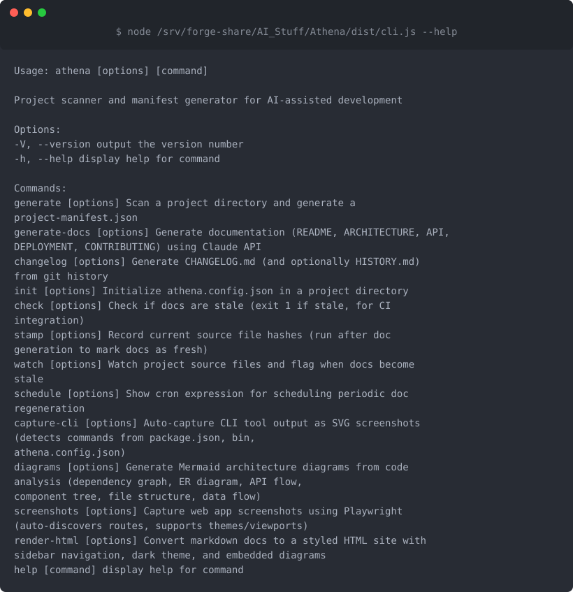
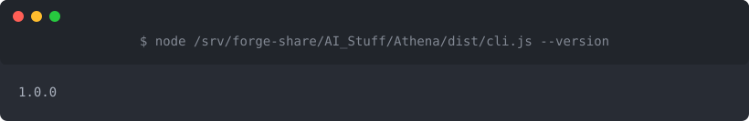

Athena
Table of Contents
- What is this? - Screenshots - Quick Start - How to Use - Features - Installation - Configuration - Tech Stack - License - Related Documentation AI-powered documentation that stays fresh with your code
What is this?
Athena automatically generates and updates your project documentation by analyzing your codebase. Instead of letting your docs get stale while your code evolves, Athena uses AI to write clear, accurate documentation that reflects what your project actually does right now. It's perfect for maintainers who want great docs without the manual effort.
Screenshots
All available Athena commands - generate docs, check freshness, create diagrams, and build changelogs
Check your installed Athena versionQuick Start
1. Install Athena
npm install -g athena
2. Set up your API key (Athena uses Claude AI)
export ANTHROPIC_API_KEY=your_api_key_here
3. Generate documentation for your project
cd your-project
athena generate
4. Check your new docs - Look for generated markdown files in your project directory
5. Keep docs fresh - Run athena freshness anytime to check if your docs are out of sync with your code
How to Use
Generate DocumentationRun athena generate in your project root. Athena will scan your codebase, analyze the structure, and create comprehensive documentation. It automatically detects your project's language and framework.
As you change your code, run athena freshness to see if your documentation is still accurate. Athena compares your current codebase against what's documented and highlights what's changed.
Use athena diagram to automatically generate visual representations of your project's structure. Great for onboarding new team members or planning refactors.
Run athena changelog to generate a changelog from your git history. Athena analyzes commits and tags to create a readable summary of what's changed between versions.
If your project has a UI, use athena screenshots to automatically capture screenshots of key screens. These get embedded in your documentation.
Features
- Automatic documentation generation - Write docs by running one command
- Freshness checking - Know when your docs are out of sync with code changes
- Multi-language support - Works with TypeScript, JavaScript, and detects frameworks automatically
- Architecture diagrams - Visualize your project structure with auto-generated diagrams
- Screenshot capture - Automatically grab UI screenshots for documentation
- Changelog generation - Build changelogs from git history
- AI-powered writing - Uses Claude AI to write clear, human-friendly documentation
- Configurable - Customize what gets documented and how with an
.athena.jsonconfig file - Git-aware - Integrates with your repository for changelogs and change detection
Installation
Prerequisites- Node.js 18 or higher
- An Anthropic API key (get one here)
- Optional: Mermaid CLI for diagram rendering (
npm install -g @mermaid-js/mermaid-cli) - Optional: Playwright for screenshot capture (installs automatically with Athena)
npm install -g athena
npx athena generate
Athena needs access to Claude AI. Set your API key as an environment variable:
export ANTHROPIC_API_KEY=your_api_key_here
Or add it to your shell profile (.bashrc, .zshrc, etc.) to make it permanent:
echo 'export ANTHROPIC_API_KEY=your_api_key_here' >> ~/.zshrc
Configuration
Create an .athena.json file in your project root to customize behavior:
{
"include": ["src//.ts", "lib//.js"],
"exclude": ["/*.test.ts", "dist/"],
"outputDir": "docs",
"diagramFormat": "mermaid"
}
include- Glob patterns for files to scan (default: all code files)exclude- Glob patterns to ignore (default: node_modules, test files)outputDir- Where to write generated docs (default: project root)diagramFormat- Diagram format preference (default: mermaid)
Tech Stack
Built with modern TypeScript tools:
- TypeScript - Type-safe codebase
- Commander - CLI interface
- Anthropic SDK - Claude AI integration for documentation generation
- Playwright - Automated screenshot capture
- Glob - File pattern matching for codebase scanning
- Diff - Change detection for freshness checking
License
MIT